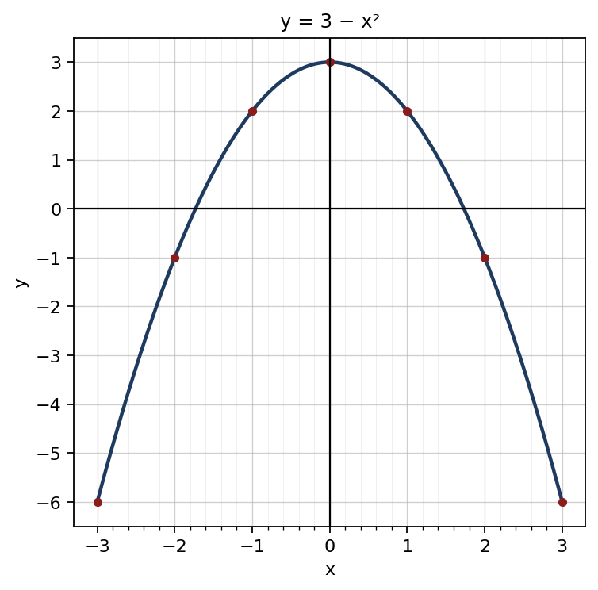

1. √5.29 = √529100 = 2310
Final answer: 2.3
(2 marks)2. 35 × 52 = 32 ; 14 × 2 = 12 ; 32 − 12
Final answer: 1
(2 marks)3. x2 − 7x + 4x − 28
Final answer: x2 − 3x − 28
(2 marks)4. (3a)2 − (4b)2
Final answer: (3a − 4b)(3a + 4b)
(2 marks)5. 2(x2 − 4x − 21)
Final answer: 2(x − 7)(x + 3)
(2 marks)6. (x − 3)(x + 3)(x + 2)(x + 3)
Final answer: x − 3x + 2
(2 marks)7. 90360 × 227 × 14 × 14
Final answer: 154 cm2
(2 marks)8. Exterior angle = sum of the two interior opposite angles ; 125° − 48°
Final answer: 77°
(2 marks)9. lg 50 × 42 = lg 100
Final answer: 2
(2 marks)10. lg 8 = 3 lg 2 = 0.9030 ; lg 0.8 = lg 8 − lg 10 = 0.9030 − 1
Final answer: 1̄.9030
(2 marks)11. 3 + (n − 1)4 = 87 ⇒ 4(n − 1) = 84 ⇒ n − 1 = 21
Final answer: 22nd term
(2 marks)12. A′ = {1, 3, 5, 7, 9} ; B = {3, 6, 9}
Final answer: A′ ∩ B = {3, 9}
(2 marks)13. 1st year: 40 000 × 1.1 = 44 000 ; 2nd year: 44 000 × 1.1
Final answer: Rs. 48 400
(2 marks)14. Work done in one day = 16 + 112 = 312 = 14
Final answer: 4 days
(2 marks)15. Time = 214 h = 94 h ; 180 ÷ 94 = 180 × 49
Final answer: 80 km/h
(2 marks)16. 2S = n(a + l) ⇒ a + l = 2Sn
Final answer: l = 2Sn − a (or 2S − ann)
(2 marks)17. Sample space = {HH, HT, TH, TT} ; Outcomes with at least one head = 3
Final answer: 34
(2 marks)18. AB = CD ⇒ 2x + 3 = 15 − x ⇒ x = 4 ; AB = 2(4) + 3
Final answer: 11 cm
(2 marks)19. Triangle = 12 × parallelogram = 12 × 48
Final answer: 24 cm2
(2 marks)20. 3.5 × 50 000 = 175 000 cm
Final answer: 1.75 km
(2 marks)| (a) | |
| Common denominator (x + 3)(x − 3) | 1 |
| 2(x − 3) + 3(x + 3) − 18(x + 3)(x − 3) | 1 |
| = 5x − 15(x + 3)(x − 3) = 5(x − 3)(x + 3)(x − 3) | 1 |
| = 5x + 3 | 1 |
| (b) | |
| Multiplying by 12: 4(x + 1) − 3(x − 2) = 24 | 1 |
| 4x + 4 − 3x + 6 = 24 | 1 |
| x = 14 | 1 |
| (c) | |
| 2x2 − x − 15 = 0 | 1 |
| (2x + 5)(x − 3) = 0 | 1 |
| x = 3 or x = −52 | 1 |
Total marks: 10
| (a) | |
| x = −3 ⇒ y = −6 ; x = 2 ⇒ y = −1 | 1 |
| (b) | |
| Correct scale and axes | 1 |
| All 7 points plotted correctly | 1 |
| Smooth curve | 1 |
 | |
| (c) | |
| (i) Maximum value 3 ; turning point (0, 3) | 1 |
| (ii) −1.7 < x < 1.7 (accept ±1.7 – ±1.8) | 1 |
| (iii) 3 − x2 = 0 ⇒ x2 = 3 ⇒ x = ±√3 ; the points where the curve cuts the x-axis | 1 |
| √3 ≈ 1.7 | 1 |
| (iv) y ≈ −3.25 (accept −3.2 – −3.3) | 1 |
| (d) | |
| y = 1 − x2 ; (−1, 0) and (1, 0) | 1 |
Total marks: 10
| (a) | |
| 90360 × 227 × 14 × 14 | 1 |
| = 154 cm2 | 1 |
| (b) | |
| Area of the square = 14 × 14 = 196 cm2 | 1 |
| Shaded region = 196 − 154 = 42 cm2 | 1 |
| (c) | |
| Length of arc BD = 90360 × 2 × 227 × 14 | 1 |
| = 22 cm | 1 |
| Perimeter = 22 + 14 + 14 = 50 cm | 1 |
| (d) | |
| Radius of the semicircle = 7 cm | 1 |
| Area = 12 × 227 × 7 × 7 = 77 cm2 | 1 |
| Total area = 196 + 77 = 273 cm2 | 1 |
Total marks: 10
| (a) In triangles ABD and ACD, | |
| AB = AC (given) ; BD = DC (D is the midpoint) | 1 |
| AD is the common side | 1 |
| ∴ ΔABD ≡ ΔACD (S.S.S.) | 1 |
| (b) | |
| AD̂B = AD̂C (corresponding angles of congruent triangles) | 1 |
| AD̂B + AD̂C = 180° (angles on a straight line) ⇒ each angle is 90° ⇒ AD ⊥ BC | 1 |
| (c) | |
| BÂD = CÂD (corresponding angles) ⇒ AD bisects BÂC | 1 |
| (d) | |
| BD = 5 cm ; AD2 = 132 − 52 = 144 (Pythagoras' theorem) | 1 |
| AD = 12 cm | 1 |
| Area = 12 × 10 × 12 | 1 |
| = 60 cm2 | 1 |
Total marks: 10
| (a) | |
| 50 000 × 8100 | 1 |
| = Rs. 4 000 | 1 |
| (b) | |
| Interest for the 2nd year = 54 000 × 8100 = Rs. 4 320 | 1 |
| Total amount = Rs. 58 320 | 1 |
| (c) | |
| Remaining amount = 58 320 − 18 320 = Rs. 40 000 | 1 |
| Interest = 40 000 × 8100 = Rs. 3 200 | 1 |
| At the end of the 3rd year = Rs. 43 200 | 1 |
| (d) | |
| Simple interest = 50 000 × 9100 × 2 = Rs. 9 000 | 1 |
| Compound interest (8%, 2 years) = 58 320 − 50 000 = Rs. 8 320 | 1 |
| The 9% simple interest method is more advantageous by Rs. 680 | 1 |
Total marks: 10
| (a) | |
| a = 500, d = 150 ; T10 = 500 + 9 × 150 | 1 |
| = Rs. 1 850 | 1 |
| (b) | |
| S12 = 122 [2 × 500 + 11 × 150] | 1 |
| = 6 × 2 650 | 1 |
| = Rs. 15 900 | 1 |
| (c) | |
| 500 + (n − 1)150 > 3000 | 1 |
| (n − 1) > 2500150 ≈ 16.67 | 1 |
| n − 1 = 17 ⇒ n = 18 ; 18th month (T17 = 2 900, T18 = 3 050) | 1 |
| (d) | |
| S18 = 182 [1000 + 17 × 150] = 9 × 3 550 | 1 |
| = Rs. 31 950 | 1 |
Total marks: 10